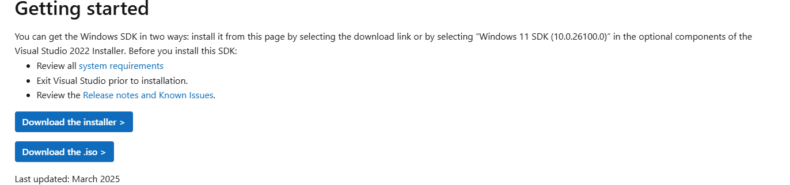

Cursus Game Development met C# voor Bas
Hoofdstuk 1: Je computer klaarzetten
🎯 Doel: Alles klaarzetten om C# programma’s te maken.
Screenshot:

Maak een map aan: C:\CSharpGames
Open de terminal in VS Code
Screenshot:

Typ in de terminal: dotnet --version
Installeer de C# extensie
Screenshot:

🧠 Leerdoel: Je weet hoe je je computer instelt om te programmeren in C#.
Hoofdstuk 2: Je eerste programma
🎯 Doel: Je leert wat code is en hoe je het laat uitvoeren.
Typ deze commando's in de terminal:
dotnet new console -n HalloBas
cd HalloBas
code .
Open het bestand Program.cs
Bekijk deze code:
Console.WriteLine("Hello, World!");
Voer het programma uit met dotnet run
✏️ Oefening: Pas de boodschap aan naar Hello Bas, veel succes met je game!